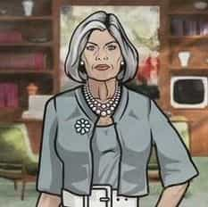

Archer is a TV show that has aired on the FX Network for the past few years. The show neatly represents America’s narcissistic sexual hierarchy and the importance of mothering in raising boys into healthy men.
Archer is about a spy agency, ISIS, and its general incompetency. The agency is headed by eponymous character Archer’s mother, Malory. Archer is an international spy who works with his ex-girlfriend Lana Kane. The accountant for the agency is Cyril Figgis. The show is fairly surreal in the sense that there is a mixing of time periods. The show looks like a 60’s spy cartoon, but the references in the show are contemporary. The style of dress is of the Sixties, and the history of the characters suggests that the show is in the 60’s. However, they use modern technology like GPS. Consider the relevant four characters:
.![[Image: archer-gun.jpeg]](http://thisisthecommonroom.files.wordpress.com/2013/04/archer-gun.jpeg)
Sterling Malory Archer: Also known as “Duchess.” A classic narcissistic alpha. He is an international spy who is handsome, jacked and always suited down. He is proficient at driving, martial arts and weaponry. However, his primary concern is drinking and playing the field. He has serious anti-social and narcissistic issues. His ex-girlfriend is fellow spy Lana Kane who is deeply enamored with him
. 
Malory Archer: Sterling’s mother. A cold and self-absorbed woman who is particularly loathsome. She has the ability to turn on the charm and regularly seduces powerful men. She was a terrible mother who treated Archer poorly. As with any psychologically draining relationship, Malory & Archer need each other to bolster their self-identity.
Lana Kane: A tall, gorgeous dark-skinned woman. She is very competent and often bails Archer out. She is in love with Archer, but his instability precludes a relationship. She is often mad because she plays second fiddle to Archer because Archer is Malory’s son.
Cyril Figgis: Comptroller for ISIS. He is competent at his job, but is a hopeless beta. He is insecure and often tongue-tied. He is the victim of office politics because he does not understand how to manipulate power. He dated Lana in Season 1, but, of course, that relationship did not last. Lana never said she loved him and often balked at public recognition of their relationship.
![[Image: 627.jpg?3725]](http://media.avclub.com/images/423/423930/16x9/627.jpg?3725)
Consider my sexual hierarchy post. In the show, we see it embodied with Archer, Lana and Cyril.
Archer is an alpha, with his pick of the women. Every female wants Archer’s dick. Given his personality, he exploits this with ruthless abandon. Cyril resents him, as Archer treats him as an inferior and doesn’t take him seriously.
Lana is a typical woman trapped between an alpha and a beta. She, of course, burns with desire for Archer, but she can only lock Cyril down. She dated Cyril so she could treat him like Archer treated her. However, when women in are control they are never satisfied with the relationship. Her treatment of Cyril mirrors the indifferent, sometimes cruel, way Archer would treat Lana. When she found out Cyril was cheating, it was the end of the relationship. Women will only stick around here only if they are in complete control of the beta. With him cheating, it set her off because it showed she couldn’t even completely control a weak beta.
Notice how narcissistic Archer is and how Lana, despite their fighting, will submit to his frame. She is a classic codependent with Archer, but becomes a compensatory narcissist with Cyril.
Archer & Malory have a sick relationship. She is a classic, cold self-absorbed woman. She left Archer in his most tender years to be raised by her butler, Woodhouse. She would show up intermittently, bearing gifts only to mock Archer while she was drunk. She clearly clearly sees Archer as little more than an object in the game of her life.
Archer, for himself, developed serious anti-social and narcissistic tendencies as a result. His drinking, his rebelliousness and his rakishness all suggest of strong dose of anti-social personality disorder. He is clearly self-absorbed, displaying a level of self-interest that he inherited psychologically from his mother. His inability to emotionally connect with anyone, his cruel treatment of perceived inferiors and his obsession with the superficial all suggest he is a clinical narcissist.
Archer highlights is how important healthy mothering is for children, most especially, for boys. There is much chatter about the importance of fatherhood in these corners of the web, but the importance of mothering isn’t discussed as often as it should. While every child may not have a father in their life, they most certainly will have a mother. In the absence of a father, healthy mothering is absolutely crucial.
However, what becomes of men with poor or terrible mothering is either becoming a simp like Cyril or an alpha like Archer.
Consider the beta first. Cyril embodies the beta beset by bad mothering. He has little ability to stand up to women and tends to either treat them like absolute dirt or deify them – that is most likely how Cyril treated his mother. He would treat her like a goddess while harboring nasty, violent thoughts about acting out against her. We see Cyril occasionally treating women like shit, only to back off if they push back. That’s how he treats his mother, as he would push back on his mother a bit, only to hastily retreat and resume worshiping her.
With Lana, we see a sexually frustrated man blinded by his codependent approach to women by worshiping or devaluing them. He tries to please Lana, only to find that kissing up to her only causes her to ratchet up her demands or disapproval. Frustrated, he pretends to want to change and improve with women, but he knows no other way of dealing with women.
Remember that these sorts of behavioral approaches are formed from infancy. The infantile rage is just that – a deep-seated rage from a mother’s neglect. Defenses have to be erected against this rage, so a baby can either choose one of two forms of narcissism: codependency or outright clinical narcissism. The former is the choice made by Cyril, the latter is the choice made by Archer.
Becoming a narcissist in the mold of your mother is easy; merely copy and mimic the all-important maternal figure. Children all adopt behaviors of those around them, trying them on to settle on a stable identity. This natural behavior is disrupted by the personality disorders of the parent. The most disruptive of these is narcissism. From an early age Archer mimicked the behavior of his mother, quickly using it is a defense mechanism against the existential disappointment of a childhood denied. Archer found out that by simply denying emotions as they arose was the best way to paper over his natural, biological emotional needs going unfulfilled.
As he aged, he found drugs, sex and rock and roll. The rush of sex, drunkenness and fast cars provided him with a way to feel something, anything. The dreadfully bland world of self-absorption is terribly psychologically draining and, often, boring. Abusing alcohol and sex is an avenue that allows Archer to experience the world of feelings. His anti-social impulses are yet another defense mechanism against change.
Both approaches taken by Archer and Cyril are inappropriate and unhealthy. Now, there is nothing wrong with enjoying alcohol, sleeping with many women or investing emotionally in a woman. As always, it is always why you are engaging in said behavior. While there certainly are institutions in society that hurt men psychologically – such as the public school system and the wider media that favors women over men – flawed mothering have marred both men’s lives. Society needs healthy mothers to raise healthy men. First, healthy mothering can greatly ward off needy behavior in men when it liberates them from the need to seek female approval in the realm of romance.
A common cause of needy behavior is men who were taught, as boys, to seek to female approval. If the mother doesn’t expect it from her son, then it minimizes beta behavior. Second, a healthy mother ensures her sons have a sympathetic ear to turn to during their vulnerable years of adolescence. Not having to rely on romantic partners for emotional support helps a young man. Many betas are born in high school when they have little guidance in the hormone-fueled rush of the teenage years. Quality mothering can help teach these men self-respect and appropriate boundaries in a relationship.
Poor mothering causes so many problems in society. Sure, she isn’t going to be able, generally, to teach a young man about how to deal with women sexually, or teach him masculine things like shaving or changing the oil in a car or even lend an ear in the way only another man can. However, she can contribute great value to a man’s life.
Archer shows a man who was a product of a completely self-absorbed woman who, in turn, creates another completely self-absorbed man in Archer. Neither person is truly a happy person and neither will ever experience real, true humans emotions like love, compassion or sympathy. Cyril represents the approach to narcissism known as codependency – he feels emotions insofar as it allows him to play the roles narcissists need him to. None of these approaches are healthy and all are a result of poor parenting. The deficient approaches to dealing with women displayed by both Archer and Cyril are a direct result of poor mothering and how society approaches the issues between the sexes.
Read Next: America’s Sexual Hierarchy Favors Alpha Males More Than Ever
{kind=link}
{kind=link}